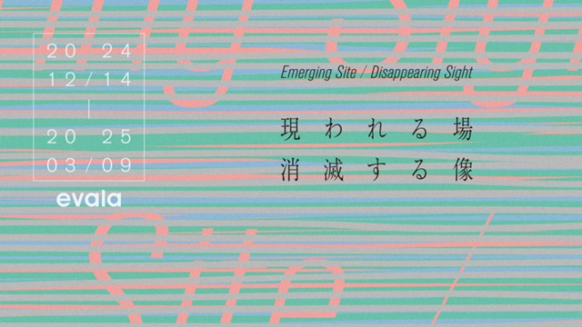

Studies for：让档案继续长出声音
Studies for 是日本声音艺术家 evala 在 NTT InterCommunication Center [ICC] 特展 “evala: Emerging Site / Disappearing Sight” 中呈现的声音装置，展期为 2024 年 12 月 14 日至 2025 年 3 月 9 日。ICC 的项目说明把它称为一次用声音效果生成 AI 创造空间作品的尝试：模型学习 evala 过去发表的 36 件空间音频作品，并以多声道方式实时生成“像 evala 的声音”。
观众进入的是一段几乎没有可见物的白色曲面空间。作品的主要材料不是屏幕图像，而是看不见的八声道声音场：每个声道都以 evala 作品开头常用的口哨声，以及从既有作品标题中选出的文本作为提示。Sony Creative AI Lab 后续发表的研究页面进一步说明，这件作品使用 SpecMaskGIT 声音生成模型，原作是八声道空间音频，公开演示视频只提供立体声混音，因此无法完整替代现场的空间感。

这件作品的关键并不只是“AI 能模仿艺术家风格”。更重要的是，它把档案从静态存储改造成一个会继续发声的系统。过去作品中的声音数据被转化为模型的学习材料；模型不是播放旧作，而是在艺术家提供概念、方向和数据的框架下生成新的空间声响。ICC 页面明确写到，这是一种探索新型档案的实验：即使艺术家缺席，空间音频作品也可能被继承并继续创作。
这种设想很诱人，也很危险。诱人之处在于，声音艺术常常依赖现场、设备、空间和技术环境，档案化并不容易；如果模型能够继承艺术家的声音方法，它似乎能延长作品生命。危险之处在于，艺术家的“风格”一旦变成可生成的统计倾向，作品就可能被误读为一种无限供应的签名声音。Studies for 比较清醒的地方，是它没有把 AI 包装成替代艺术家的自动作者，而是把它放在“第一试验模型”的位置上：它展示的是继承的可能性，也暴露继承本身需要被审美、技术和伦理共同约束。
Sony 研究页面提供演示视频和论文入口；视频为立体声混音，适合理解机制，但不能替代八声道现场经验。
打开演示与论文页面